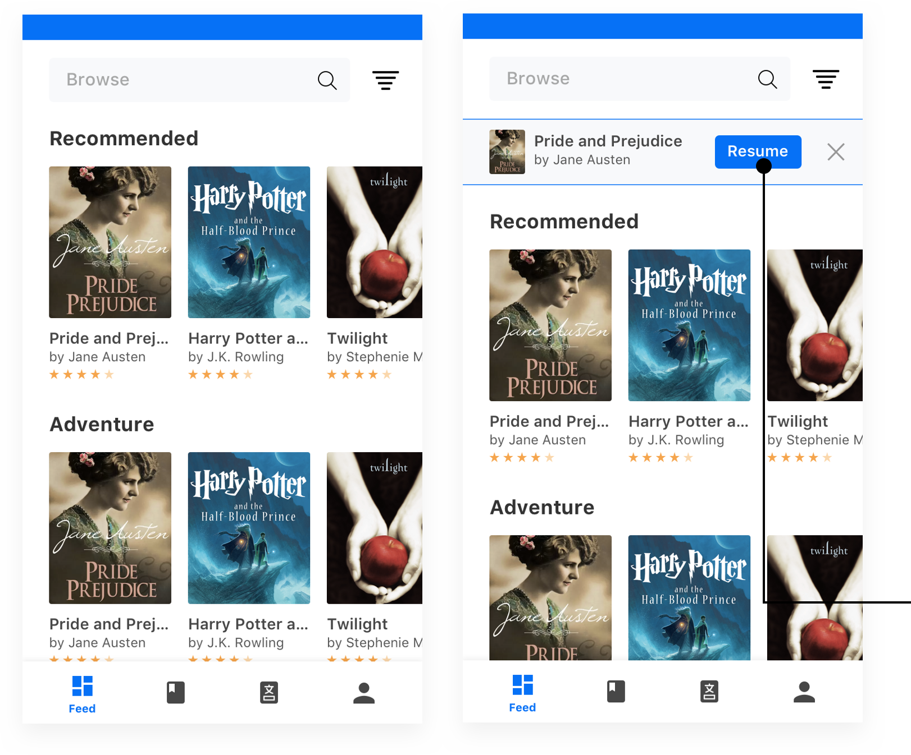
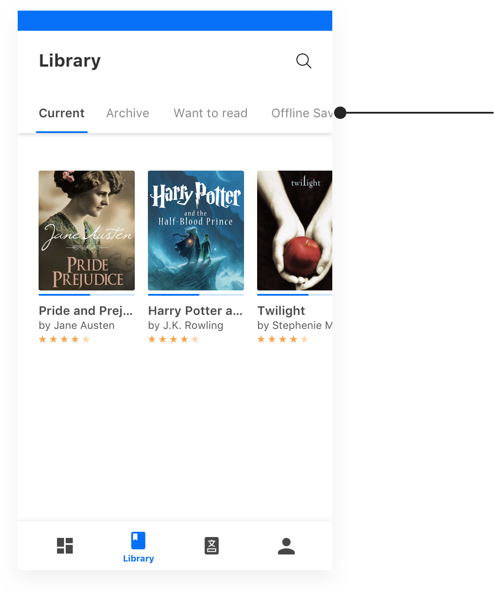
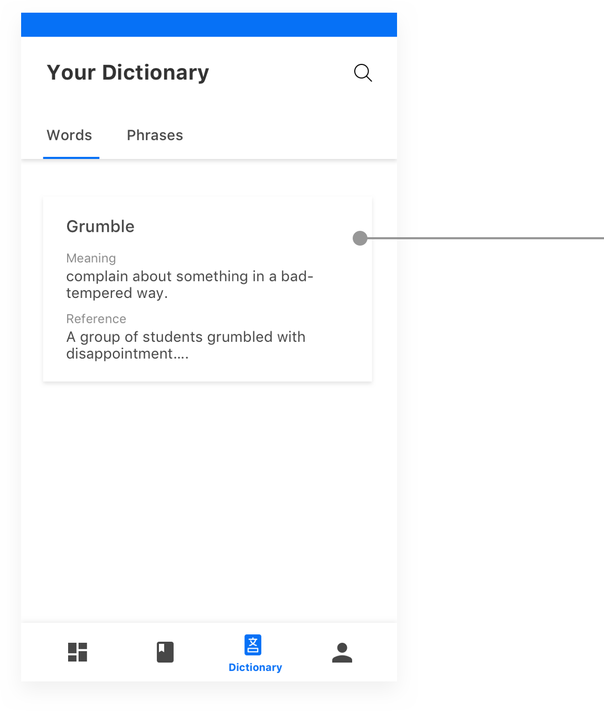
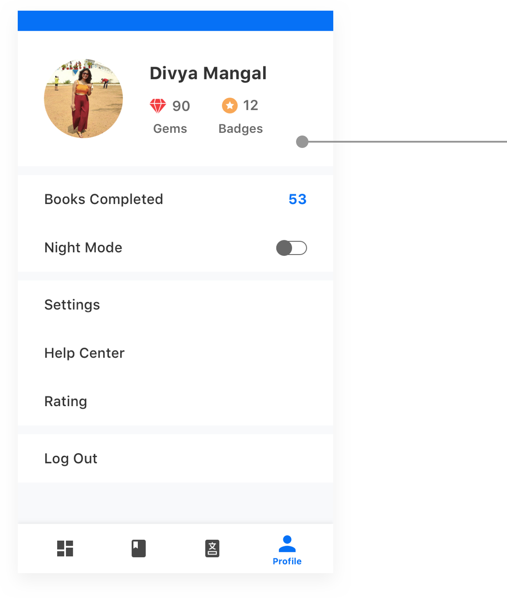
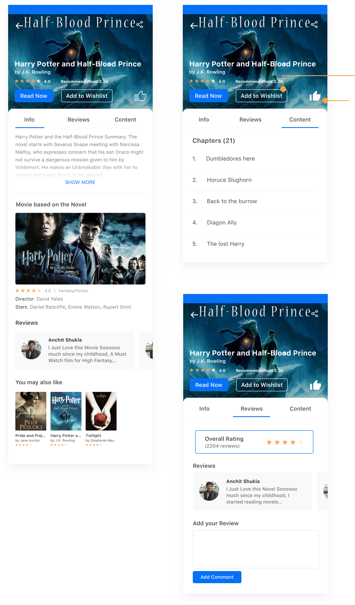
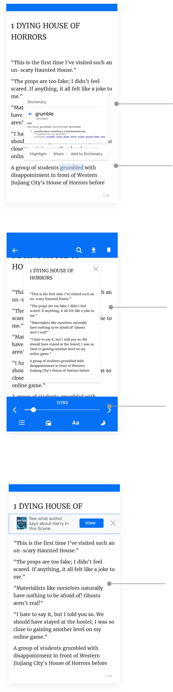

Feed Screen

Filter
1. Genre
2. Top-selling
3. Most Recommended
4. Most Reviews
5. Free
6. Paid
1. Genre
2. Top-selling
3. Most Recommended
4. Most Reviews
5. Free
6. Paid
Continue Reading if the person close the app in Between.
Feed Screen - Onboarding Dependent
The feed Screen will be shown according to the data taken in the onboarding. The data are :
1. How frequently you read Books - Once a week, Once a month, Once a year.
2. Select Genres of your taste.
3. Select atleast 5 books you want to read or have previously read.
1. How frequently you read Books - Once a week, Once a month, Once a year.
2. Select Genres of your taste.
3. Select atleast 5 books you want to read or have previously read.
Your Library

Categories to keep books in the Library
1. Currently Reading
2. Archived (Completed or rejected to read)
6. Paid
Your Dictionary

After you add to Library it will get stored with meaning and with the reference of sentence on click the incomplete reference you will reach to the location of sentence in the book.
Your Profile

Here you can see the no. of gems earned and bagdes. According to the gems you can also set notification from settings option.
If the person clicks the night mode from here it will be valid for the whole app not only for novel.
After you click on any book Icon

Book will be added to want to read section in the library.
Tap to Recommend the book
Reading Experience screens

Automatically dicitonary will open after long pressing and selecting a word/phrase.
1. Add word/phrase to dictionary to see later
2. Highlight
3. Share in social media (Phrase written on background of book cover).
On a single tap on screen this UI will appear.
1. Search
2. Make book offline
3. Bookmark this page
1. See content of book
2. See fun/interesting facts related to book
3. Adjust font size
4. Adjust light
A pop up comes after reading few pages which shows interesting facts related to book which can be skipped also. It will automatically get saved in the bottom nav of this page.(shown above)